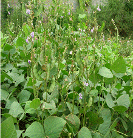
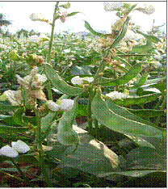

HORT 281 :: Lecture 20 :: ORIGIN, AREA, PRODUCTION, VARIETIES, PACKAGE OF PRACTICES FOR HYACINTH BEAN

Origin, area, production, varieties, package of practices for HYACINTH BEAN
(Syn: Indian bean) Lablab purpureus L.
(Syn: Dolichos lablab, D. purpureus) (2n = 22, 24)
(Hindi: Sem)
Hyacinth bean, also known as field bean or dolichos bean, is grown throughout tropical regions of Asia, Africa and America. In India, it is grown as a field crop in Tamil Nadu., Andhra Pradesh, Karnataka, Madhya Pradesh and Maharashtra. In Kerala, the photo sensitive pole types are grown in homesteads by trailing to bower for its tender fruits which are used as cooked vegetable. Dry beans are also sued in various vegetable preparations; 100 g of green pods contain 6.7 g carbohydrates, 3.8g carbohydrates, 3.8 proteins, 1.8 g fibre, 210 mg calcium, 68.0 mg phosphorus, 1.7 mg iron etc.
Origin, taxonomy and botany
Hyacinth bean originated in India. Two cultivated type’s viz., Lablab purpureosu var. typicus and L. purpureus var. lignosus were reported by Sivasankar et al. (1971). Former is vegetable type cultivated for its soft and edible pods and latter is the field bean cultivated for dry seeds as pulse. Both varieties are cross compatible.
L. purpureus var typicus L. purpureus var lignosus

Hyacinth bean is a perennial herbaceous plant often grown as an annual. Pole types are photosensitive. Leaves are alternate and trifoliate. Flowers are borne in axillary racemes and are typically papilionaceous and are self-pollinated.
Flowering takes place under short day periods irrespective of planting time. Anthesis occurs from 9 a.m. to 5 p.m. (Pokle and Deshmukh, 1971). Anther dehiscence is from 5.00 a.m. to 2.00 p.m. Stigma is receptive on the day of anthesis.
Varieties
A brief description of the improved varieties is given :
Developing institution |
Variety |
Special features |
IIHR, Bangalore |
Arka Jay |
Photo-insensitive bush variety developed by selection at F7 from Hebbal Avare 3 (Bush) x IIHR 99(Pole-recurrent parent). Pods long, light green slightly curved. Yield 1w t/ha in 75-80 days. |
|
Arka Vijay |
Photo-insensitive bush variety developed by selection at F7 from Hebbal Avare 3(Bush) x Pusa Early Prolific (Pole). Pods short, dark green with characteristic aroma. Yield 12 t/ha in 75-80 days. |
UAS, Bangalore. |
Hebbal Avare-1 |
Bush and photo insensitive variety. Pods small and soft. Yield 0.8 t/ha in 90-100 days. |
|
Hebbal Avare-3 |
Bush and photo insensitive variety. Flowers white. Pods green, 2-3 seeded. Seeds brown, round and small. Yield 8-10 t/ha in 90-100 days. |
|
Hebbal Avare-4 |
Bush and photo insensitive variety. Pods soft and harvested in 5 pickings. Yield 6 t/ha. |
IARI, New Delhi. |
Pusa Early Prolific |
Pole type. Pods flat, green, narrow, cycle shaped. Pod length 9.3 cm, width 1.5 cm, weight 3.5 g. Yield 14 t/ha in 200-215 days. |
|
Pusa Sem 2 |
Pole type. Pods semi-flat, dark green, fleshy and stringless. Pod length 15-17 cm. Yield 13-22 t/ha in 200-215 days. Tolerant to anthracnose, yellow bean mosaic virus, aphids, pod borers and frost. |
|
Pusa Sem 3 |
Pole type. Pods flat, green, fleshy and stringless. Pod length 15 cm. Yield 17-27 t/ha in 200-215 days. Tolerant to anthracnose, yellow bean mosaic virus, aphids, pod borers and frost. |
KKVP, Dapoli |
Wal Konkan 1 |
Bushy, photo-insensitive, resistant to yellow mosaic virus. Yield 9-10 t/ha in 110-115 days. |
|
Konkan Bhushan (DPLD 1) |
Bushy, photo-insensitive, resistant to yellow mosaic virus. Yield 9-10 t/ha in 110-115 days. |
Tamil Nadu Agricultural University |
CO.1 |
Pole type. Pods green, fleshy with slow fibre development. Pod weight 9.7 g. Yield 18-20 t/ha in 160-180 days. |
|
CO.2 |
Pole type. Pods, flat, green with purple margin. Pod length 9.3 cm, width 2.1 cm, weight 6.17 g. Yield 11.8 t/ha in 210-220 days. |
|
CO.3 |
Pole type. Pods fleshy, green with purple tinge. Pod length 10.6 cm, width 4.8 cm, weight 11.77 g. Seeds black. Yield 10.0 t/ha in 230 days. |
|
CO.4 |
Pole type. Pods deep purple throughout and fleshy. Pod length 10.2 cm, width 3.3 cm, weight 7.43 g. Seeds black. Yield 13.5 t/ha in 215-220 days. |
|
CO.5 |
Pole type. Pods long, narrow, light green to white in colour, tubular, curved with serrated margin. Pod length 13.4 cm, breadth 1.5 cm, weight 5.26 g. Seeds chocolate brown. Yield 6-7 t/ha in 235 days. |
|
CO.6 |
Bush variety. Selected from DL 3169 x CO.5. Pods slightly curved and bloated. Yield 12 t/ha in 240 days. |
|
CO.7 |
Bush variety. Selected form DL 3169 x CO.5. Pods long, succulent, flat, greenish white and broad. Yield 12 t/ha in 240 days. |
|
CO.8 |
Bush variety. Pods green tubular and fleshy. Yield 6-8 t/ha in 120 days. |
|
CO.9 |
Bush variety. Pods and grains are used. Yield 7-8 t/ha in 120 days. |
|
CO.10 |
Bush variety. Induced mutant from CO.6 by gamma ray (24 krad). Pods greenish white, tubular and curved. Yield 5-6 t/ha in 120 days. |
|
CO.11 |
Bush variety. Hybrid derivative of CO.9 x a pandal type. Compact plant type. Pods flat and light green with purple margin. Yield 9-10 t/ha. |
|
CO.12 |
Bush variety. Hybrid derivative of CO.9 x CO.4. Pods deep purple. Yield 10-12 t/ha in 110 days. |
|
CO.13 |
Bush variety. Hybrid derivative of Co.9 x a training type. Pods long green. Yield 10t/ha in 110-120 days |
CSAUA&T, Kanpur. |
Rajani |
Pole type. Pods narrow oval in cross section, shining green. Pod length 10.4 cm, width 1.2 cm, weight 1.78 g. Yield 7-8 t/ha in 200-210 days. |
|
KDB 403 |
Pole type. Pods long, narrow, shining green. Pod length 12.9 cm, width 1.2 cm, weight 2.0 g. Yield 5-6 t/ha in 180-210 days. |
|
KDB 405 |
Pole type. Pods medium long, narrow, dark green band in the middle and boarders light green. Pod length 9.6 cm, width 1.3 cm, weight 1.1 g. Yield 3-4 t/ha in 180-200 days. |
MPKV, Akola |
Dasarawal |
Pole type. Pods dirty green with purple tinge at both boarders. Pod length 7.8 cm, width 2.0 cm, weight 3.2 g. Yield 7-8 t/ha. |
|
Deepaliwal |
Pole type. Pods extra long (18.4 cm), white, not smooth due to bulging at each seed. Pod width 2.7 cm, weight 1.5 g. Yield 6-8 t/ha in 200-210 days. |
JNKV, Jabalpur. |
JDL. 79 |
Pole type. Pods flat, broad, whitish green with parrot green boarder along the line of seed attachment. Pod length 11.8 cm, width 3.6 cm, weight 1.5 g. Yield 5.6 t/ha in 200 days. |
|
JDL 53 |
Pole type. Pods flat, small, narrow, dull whitish green with purple tinge along the boarder. Pod length 7.2 cm, width 1.8 cm, weight 3.75 g. Yield 10-12 t/ha in 200-220 days. |
Cultivation practices
Prepare land to fine tilth, and sow seeds during July-August with onset of monsoon. In South and Central India, it is grown as a mixed crop with ragi and sorghum. Seeds are dibbled at a spacing of 1.0 m in between ragi or sorghum. After harvest of ear heads of ragi of sorghum, dolichos bean plants are allowed to twine and spread on their stalk. Plants start flowering and fruiting by November-December and continue up to late spring. Later vines are cut along with sorghum straw and given to cattle as a nutritious feed. As a pure crop, dolichos bean is sown at a spacing of 1.0 x 0.75 m @ 3-4 seeds / hill and later thinning is done retaining only 2 plants. Seed rate for pure crop is 50-60 kg/ha.
Pole types are usually sown in backyards of homesteads. Take pits of 45-60 cm diameter during June-July and full with green leaves and wet cow dung. Allow manure to decompose properly for 2-3 weeks. Cover pits with top soil and sow 3-4 seeds in a pit. Erect a bower with bamboo poles over an area of 4.0 x 4.0 m keeping pit at the centre. Allow plants to climb on bower by erecting one or two long twigs in pits. Apply organic manure around plants and earth up with laterite or loan soil. After cessation of rains, make a circular basin 30-35 cm away from base of plants for irrigation. Provide light irrigation daily in basin. Plants start yielding after 3 months once short days start. Thereafter daily watering and fortnightly application of organic manure are essential for protracted flowering and harvest of stringless pods over a long period.
Harvesting and yield
In bush varieties harvesting starts 50-60 days after sowing. In pole types flowering starts around three months after sowing during short days. Harvesting starts from November – December and extends up to middle of March in Kerala. Pods are harvested at tender stage before it becomes fibrous. Green pod yield varies from 5 to 8 t/ha.
Pests and Diseases
Aphids, pod borer and leaf eating caterpillar are the major pests affecting dolichos bean. Among the diseases, Cercospora leaf spot and Rhizoctoni wilt are most serious.
Lab Lab or Dolichos bean
Application of fertilizers
(a) Basal dressing for bush type
Manures and fertilizers |
Irrigated |
Dry |
FYM |
12.5 t/ha |
12.5 t/ha |
N |
25 kg/ha |
12.5 kg/ha |
P |
50 kg/ha |
25 kg/ha |
K |
- |
- |
(b) For pandal type
Apply 10 kg FYM per pit (20 t/ha) 100 g of NPK 6:12:12 mixture as basal and 10 g N per pit after 30 days. Apply 2 kg each Azospirillum and Phosphobacteria per ha at the time of sowing.
*********
1. _________types of lablab bean or hyacinth beans are photoinsensitive in nature.
a. Pole types b. Bush types c. Both a & b d. None
2. ___________variety of lablab bean bears pods in bunches.
a. CO 1 b. CO 2 c. Pusa early prolific d. CO 10
3. The centre of origin for lablab bean is----------------------.
a. China b. India c. Mexico d. Europe
4. Chromosome number of lablab bean is
a. 22 b. 24 c. Both d. None
5. Lablab yellow mosaic is transmitted by-------------------.
a. Aphids b. Whitefly c. Jassids d. Mites
| Download this lecture as PDF here |